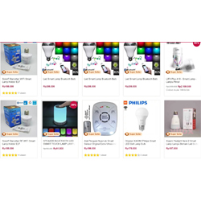

SmartLamp
Disusun oleh
- 161114198 Frans Tambunan
- 161111451 M Apriyansah Sihotang
- 161113818 Hagai Anugrahta S
- 161113061 Evansius Sihotang
- 161112472 M Salim Bahreisy
Sejarah
Smart Light atau lampu LED Wi-fi pertama kali dikembangkan oleh ilmuwan di Boston University College of Engineering pada tahun 2008, Rensselaer Polytechnic Institute di Troy, NY, dan University of New Mexico juga ikut berpartisipasi dalam proyek ini, dibawah bantuan National Science foundation. Penelitian yang dipimpin oleh professor Thomas Little ini bertujuan untuk mengembangkan teknologi komunikasi optik yang akan membuat lampu LED setara dengan jalur akses Wi-Fi. Wi-Fi sendiri awalnya dikembangkan sekelompok insinyur Amerika Serikat yang bekerja pada Institute of Electrical and Electronis Engineers (IEEE) berdasarkan standar teknis perangkat bernomor 802.11b, 802.11a dan 802.16.
Deskripsi
Lampu pintar LED Wi-Fi (Smart Light LED Wi-Fi) adalah sebuah teknologi nirkabel yang dikembangkan untuk dapat mengirimkan data melalui perantara cahaya. Nantinya cahaya dari sinar lampu yang dipancarkan dari LED akan menggantikan teknologi sinyal radio yang digunakan untuk menjadi jalur Wi-Fi. Teknologi ini dianggap lebih aman daripada teknologi jaringan yang ada saat ini, hal ini disebabkan karena cahaya putih dari lampu tidak dapat menembus permukaan seperti dinding, sehingga dapat mengurangi risiko penyadapan atau pencurian data.
Lampu LED juga mengonsumsi energi yang jauh lebih sedikit daripada teknologi sebelumnya, hal ini memberikan ruang untuk mengembangkan jaringan komunikasi yang hemat biaya energi dan mengurangi emisi karbon dalam jangka panjang. Sistem komunikasi berbasis cahaya ini nantinya digunakan juga untuk menyediakan koneksi internet untuk komputer, PDA, penerimaan televisi dan radio, sambungan telepon dan kontrol suhu thermostat.
Latar Belakang
Pada saat ini pertambahan penduduk di dunia semakin pesat. Hal tersebut mengakibatkan penggunaan energi yang semakin besar dan cenderung tidak efisien. Energi listrik termasuk dalam kebutuhan primer bagi masyarakat kebanyakan. Oleh karena itu, penulis mencoba membuat sistem untuk mematikan lampu kamar secara otomatis dengan nama "Smart Lamp"
Alat ini dibuat untuk menghemat penggunaan energi listrik. Dengan cara kerja menggunakan sensor utama yaitu sensor gerak. Alat ini juga di lengkapi oleh sebuah sensor berupa sensor tepuk tangan dengan cara kerja menepuk tangan dua kali maka lampu tidur akan menyala dan lampu utama akan mati. Jika di tepuk dua kali lagi maka akan kembali ke keadaan semula. Jika di tepuk tiga kali seluruh lampu kamar akan mati. Dan jika di tepuk tiga kali lagi maka lampu akan menyala seperti keadaan sebelumnya.
Cara kerja sensor ini adalah dengan mendeteksi adanya suatu gerakan setiap periode waktu tertentu. Hasil pembacaan sensor yang terhubung oleh sebuah mikrokontroler ini berfungsi untuk mengendalikan lampu utama di kamar tidur.
Spesifikasi dan Cara Kerja
Lampu pintar LED wi-fi sudah memiliki prototype yang diberi nama Smart Lighting 1, prototype ini terbuat dari papan elektronik 3 x 6 inchi yang dibagi dalam 2 bagian. Bagian pertama terdiri dari 9 buah komponen lampu LED putih (diode pemancar cahaya) dengan tingkat kecerahan yang tinggi yang berfungsi untuk mentransmisikan data. Bagian yang kedua terdiri dari 3 buah diode foto (photodiode) yang berfungsi untuk menerima sinyal cahaya dan mengubahnya menjadi sinyal elektronik. Prototype Smart light 1 menghasilkan sinyal dari proses kerja lampu LED yang dimodulasi pada frekuensi tertentu yang memungkinkan untuk transfer data berkecepatan tinggi. Setiap papan SL1 dapat memberikan sinyal ke perangkat elektronik yang kita miliki seperti laptop, PDA, dan hanya dihubungkan dengan menggunakan USB kabel. Kemampuan untuk mengubah frekuensi modulasi lampu LED on dan off secara cepat adalah kunci dari teknologi baru ini, begitu cepat perubahan itu sehingga tidak terlihat oleh mata manusia. Cahaya LED yang berkedip-kedip dalam pola tertentu memungkinkan transmisi data tanpa ada perubahan nyata dalam pencahayaan ruangan. Dan teknologi ini tidak terbatas hanya pada lampu di dalam ruangan, sehingga bisa diterapkan di luar ruangan. Pengujian pertama dari lampu ini bahkan dilakukan di industri otomotif.
Cara menghubungkan Smartlamp dengan android
Langkah 1
Download aplikasi Smartlamp via Playstore atau App Store. Jalankan, lalu Login.
Langkah 2
Pilih server Singapore, centang I have read, understand, and agree… dan tap tombol Login.
Langkah 3
Login ke akun Mi kamu lalu tap Sign in. Jika belum punya, silahkan Create account (gratis). Pendaftaran tidak mengharuskan kamu memiliki ponsel Xiaomi.
Langkah 4
Setelah masuk, tap ikon plus untuk menambah perangkat baru lalu pilih Add Device.
Langkah 5
Pilih jenis perangkat Smartlamp yang ingin kamu pasang.
Langkah 6
Pastikan kamu telah reset device dengan cara menyalakan dan mematikan lampu sebanyak 5 kali dengan metode tradisional. Lampu akan berkelap-kelip di akhir proses reset, kemudian tap Next.
Langkah 7
Jika perangkat sudah terdeteksi, pilih lalu Next.
Langkah 8
Masukan nama WiFi beserta kata sandinya dimana lampu akan terhubung. Selanjutnya, tap Next.
Langkah 9
Tunggu hingga proses pemasangan (pairing) selesai, kemudian Done. Jangan lupa untuk memberi nama perangkat (misalnya: lampu kamar, dapur, dsb). Kamu juga akan ditawarkan untuk mengaktifkan LAN Control, saran saya diaktifkan saja karena ini bisa mengurangi latensi ketika mengontrol lampu.
Langkah 10
Lampu Smartlamp kamu akan muncul di tampilan aplikasi, tap untuk masuk ke pengaturan dan mengakses segala fiturnya.
5 Keunggulan Lampu Smart LED Dibanding Lampu Konvensional
1. Dikontrol melalui smartphone
Setelah lampu ditempatkan pada dudukannya, kita bisa segera menyambungkannya melalui koneksi, Wi-Fi, Bluetooth, atau kabel LAN. Langkah selanjutnya adalah menginstal aplikasi lampu pintar tersebut. Misalnya aplikasi Mi Home jika kita menggunakan lampu pintar XIaomi atau mengunduh aplikasi Google Home jika kita menggunakan lampu pintar merek Phillips. Setelah itu kita bisa bebas mengatur pencahayaan ruangan kita. Setelah menginstal aplikasi dalam smartphone, kita dapat segera mengatur pencahayaan ruangan dari ponsel. Kita dapat mematikan, menyalakan, dan juga mengatur redup terangnya cahaya. Misalnya meredupkan lampu saat hendak tidur juga mengatur agar lampu secara otomatis padam ketika kita telah bangun di pagi hari.
2. Meningkatkan kualitas tidur
Ketika menggunakan lampu neon biasa, masalah yang kerap timbul adalah seringkali lampu yang kita beli terlalu terang atau terlalu redup. Lampu yang terlalu terang membuat kita gerah dan lampu yang terlalu redup memusingkan kita ketika beraktivitas di kamar pada malam hari. Nah dengan teknologi lampu pintar, ini kita bisa meredupkan cahaya lampu pada malam hari sehingga perlahan mampu membuat kita terlelap. Lampu pintar ini mampu memancarkan cahaya dan temperatur yang didesain sedemikian rupa untuk meningkatkan kadar melatonin, sebuah zat dalam tubuh yang membuat tidur lebih berkualitas. Pada siang hari kalian juga bisa juga mengatur pencahayaan lampu menjadi lebih terang agar meningkatkan produktivitas kerja.
3. Menghemat daya dan tahan lama
Umur 15 tahun atau 15.000 jam penggunaan. Sebagai perbandingan, lampu bohlam biasa umurnya hanya sampai 1000-2000 jam pemakaian. Selain tahan lama, kita juga bisa lebih menghemat daya dengan lampu pintar. Teknologi LED sebenarnya sudah lebih hemat dibanding dengan lampu biasa. Apalagi ditambah dengan teknologi pintar di dalamnya. Dengan teknologi lampu pintar kita bisa menghemat daya yang berarti juga menekan biaya tagihan listrik. Teknologi lampu pintar memungkinkan kita mengatur kapan lampu nyala dan mati. Bahkan lampu pintar yang disertai sensor gerak mampu secara otomatis mati ketika ruangan tertentu telah kita tinggalkan.
4. Kemampuan mengubah warna cahaya yang dipancarkan
Keunggulan lain dari lampu pintar ini tentu saja kita bisa mengatur warna lampu sesuai mood atau aktivitas yang tengah kita jalani. Kita bisa secara bebas memilih aneka ragam warna cahaya melalui smartphone. Pemilihan cahaya ini penting untuk meningkatkan produktivitas kerja atau membantu kita untuk menjalani hari dengan lebih ceria. Misalnya kita hendak membaca, kita dapat mengubah warna dengan pencahayaan yang putih terang. Ketika suhu udara tengah terik, kita dapat membantu menyejukkan suhu ruangan dengan lampu yang terang namun temaram sehingga tidak membuat panas. Begitu pun ketika kita tengah mengadakan pesta, kita dapat mengubah ke warna yang mencolok seperti warna merah jambu, ungu, atau hijau. Intinya warna cahaya lampu bisa dikustomisasi sesuai mood kita.
5. Dilengkap dengan speaker
Beberapa teknologi lampu pintar seperti merek MiPOW Playbulb Color telah memiliki sistem speaker di dalamnya yang dihidupkan dengan koneksi bluetooth. Misalnya ketika kita memutar musik mellow di smartphone maka pencahayaan akan meredup. Sebaliknya, ketika kita memutar lagu dengan tempo yang tinggi, lampu akan berwarna pink atau cerah. Harga lampu pintar ini memang lebih mahal dari lampu LED biasa. Satu buah lampu pintar merek Xiaomi saja misalnya berharga sekitar Rp250.000 untuk daya 10 watt.
Risiko 'Smart Home'
Pembajak
Semakin canggih teknologi yang terhubung dengan sinyal internet, maka tingkat kejahatan cyber pun memiliki celah untuk bisa menyelinap dan melakukan pembobolan data rumah. Hacker biasanya mudah menyerang melalui smartphone dan kemudian mengakses teknologi smart home Anda. Hacker akan mencuri data-data pribadi anggota keluarga yang ada di rumah, selain itu hackers juga dapat mengendalikan sistem keamanan rumah dari jarak jauh melalui data-data yang dicurinya. Maka dari itu, tak sedikit para perusahaan teknologi yang terus mengembangkan sistem keamanan pada produk smart home yang dipasarkan.
Satu Smartphone untuk Semua Aktivitas
Memiliki smart home yang bisa dikendalikan dari smartphone yang Anda gunakan setiap hari memang bisa jadi hal yang memudahkan. Namun apa jadinya jika smartphone Anda tiba-tiba dicuri atau hilang. Hal ini tentu akan menyulitkan dan menyebalkan. Jika smartphone hilang, maka Anda akan kesulitan untuk masuk ke dalam rumah atau mengatur apapun yang telah menjadi kebiasaan sehari-hari. Disarankan untuk selalu memiliki kunci cadangan agar tetap bisa masuk ke dalam rumah jika hal ini terjadi suatu saat nanti.
5 Hal yang Perlu Diperhatikan Sebelum Membeli Smart Lamp
1. Ketahui fitur kendali lampu pintar
Bagaimana kamu akan mengendalikan lampunya? Penggunaan lampu pintar (smart lamp) ditujukan untuk mengoptimalkan fungsi pencahayaan pada berbagai jenis ruangan. Jika kamu merasa tidak nyaman dengan pencahayaan yang terlalu terang di ruang tidur atau ruang keluarga, tingkat kecerahannya kini bisa diatur ketika kamu menggunakan lampu pintar. Tidak hanya unggul dari fitur pengaturannya, lampu pintar juga bisa digunakan dengan lebih praktis menggunakan aplikasi, sehingga kendalinya dapat diatur dari jarak jauh. Hal ini akan sangat bermanfaat jika kamu sedang berada di luar rumah agar konsumsi daya listrik bisa lebih aman dan efisien.
2. Pilih produk lampu yang dibutuhkan
Apa saja jenis produk smart lighting? Jika kamu melakukan pencarian secara online, kamu bisa menemukan beberapa pilihan produk ‘smart lighting’ dengan nama yang berbeda-beda. Pernah mendengar istilah smart bulb, smart plugs atau smart switches? Semua istilah tersebut pada dasarnya adalah komponen yang bisa digunakan untuk mendukung penggunaan lampu pintar di rumah kamu. Beberapa merek biasanya menawarkan produk mereka dalam satu paket starter kit, sedangkan merek lainnya menjual sebuah produk secara mandiri karena tidak memerlukan komponen pendukung lain untuk digunakan.
3. Identifikasi perbedaan jenis lampu sebelum membeli
Apa perbedaan smart bulb, smart plugs atau smart switches? Smart bulb adalah bola lampu (bohlam) yang bisa langsung dipasangkan langsung pada soket lampu di rumahmu. Hal yang perlu diperhatikan adalah jenis atau ukuran soket lampu, ukuran yang lazim digunakan di Indonesia adalah soket E27 atau E14. Smart plug adalah perangkat koneksi lampu yang bisa dihubungkan melalui soket listrik yang sudah kamu miliki pada bagian dinding ruangan. Perangkat yang dipasangkan bisa saja berupa radio transmitter yang berfungsi sebagai penghubung perangkat lampu pintar lain yang terpisah. Selain itu, smart switch adalah tombol sakelar yang bisa digunakan untuk menghubungkan lampu pintar melalui koneksi kabel yang terintegrasi.
4. Ketahui kebutuhan kamu, pilih fitur dan fungsi yang sesuai
Pilihan tentunya ada di tangan kamu, sistem pencahayaan seperti apa yang ingin kamu buat di rumah? Jika kamu hanya ingin mengubah dekorasi lampu di kamar tidur, kamu bisa memilih smart bulb dengan ukuran yang sesuai dengan soket lampu di ruangan. Akan tetapi, pastikan ukurannya sudah sesuai sehingga kamu bisa langsung mengatur fungsi lampu tersebut dari gadget ataupun perangkat kendali lainnya. Kamu bisa memilih smart plug atau smart switch apabila kamu ingin mengubah sistem pencahayaan di rumah kamu melalui satu sistem yang terintegrasi. Hal ini akan mempermudah kamu untuk mengatur beberapa perangkat lampu pintar sekaligus untuk menciptakan suasana yang lebih nyaman dengan kendali yang praktis.
5. Pelajari dan pilih cara penggunaannya
Bagaimana cara mengoperasikannya? Penggunaan lampu pintar biasanya terintegrasi melalui konektivitas jaringan, baik jaringan LAN, Wi-Fi ataupun Bluetooth. Kamu biasanya dapat mengunduh penggunaan aplikasi pada gadget atau smartphone untuk bisa mengendalikan penggunaan lampu dari jarak jauh. Beberapa merek produk juga memungkinkan kamu untuk melakukan kendali secara langsung pada bagian perangkat. Salah satu produk yang bisa dikendalikan langsung pada bagian perangkat adalah Xiaomi Yeelight Bedside Lamp, penggunaan fitur lampu pintar ini dapat diatur langsung dengan sensor sentuhan pada bagian atas permukaan lampu. Akan tetapi kamu juga bisa menghubungkan kontektivitas Bluetooth untuk menghubungkan koneksi remote dari aplikasi pada gadget. Produk lain yang berbeda adalah Philips Hue, penggunaannya memerlukan integrasi jaringan yang terhubung melalui koneksi WiFi dengan kelengkapan starter kit. Setelah terhubung ke dalam satu jaringan yang sama, kamu bisa mengatur waktu untuk menyalakan dan memadamkan lampu, serta mengatur warna pencahayaan melalui aplikasi di dalam gadget.
Bullet List
Powered by bespoke-bullets
- Bullet 1
- Bullet 2
- Bullet 3
Images
Syntax Highlighting
Powered by Lea Verou's Prism
(function() {
function hanoi(n, a, b, c) {
return n ? hanoi(n - 1, a, c, b)
.concat([[a, b]])
.concat(hanoi(n - 1, c, b, a)) : [];
}
return hanoi(3, 'left', 'right', 'mid')
.map(function(d) {
return d[0] + ' -> ' + d[1];
});
})();Named Route
Powered by bespoke-hash
Look up! This route has been named with a data-bespoke-hash attribute.
Terimakasih…
- Edit HTML markup in src/index.html
- Edit Stylus styles in src/styles/user.styl
- Edit JavaScript in src/scripts/main.js
- Enjoy! :) -@markdalgleish